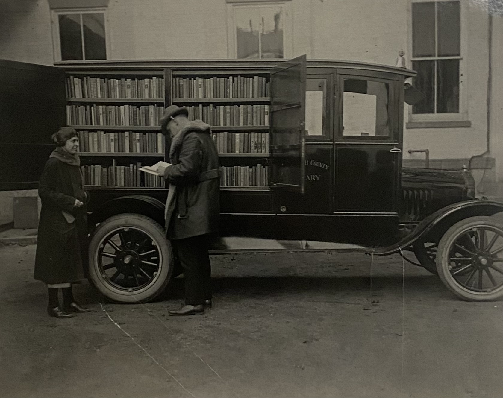
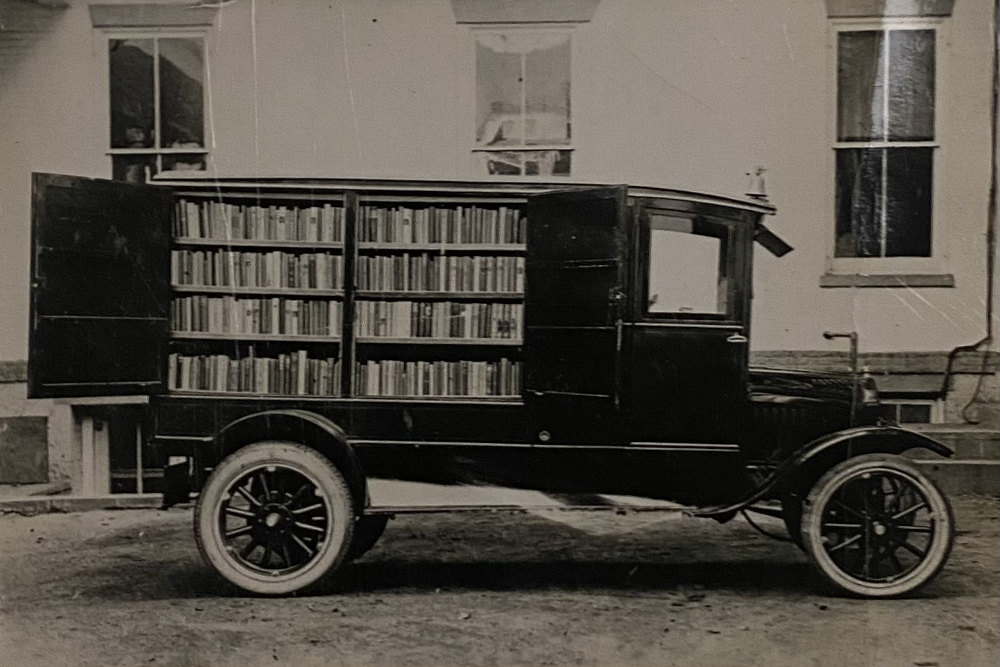
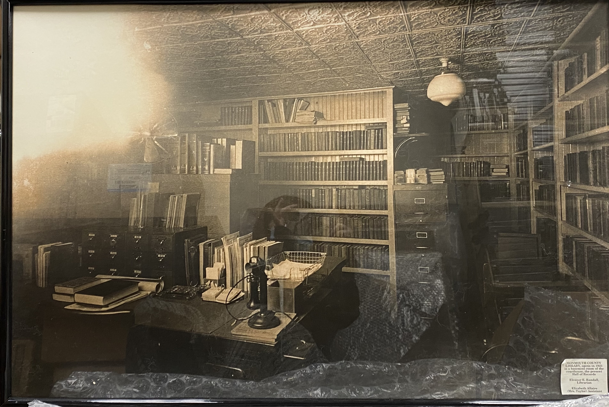
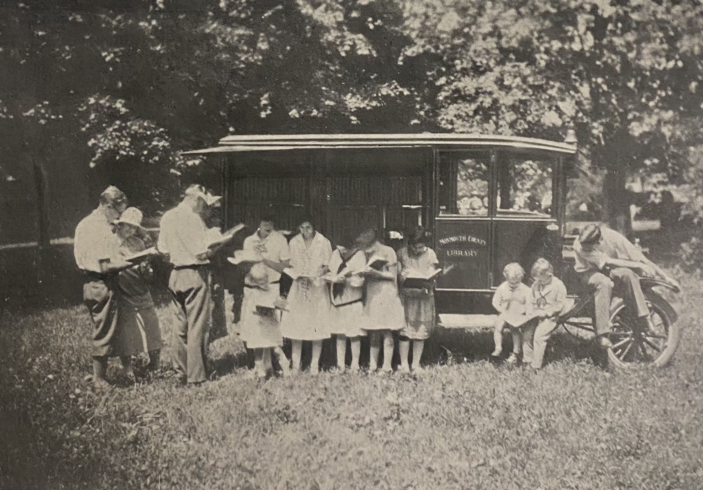
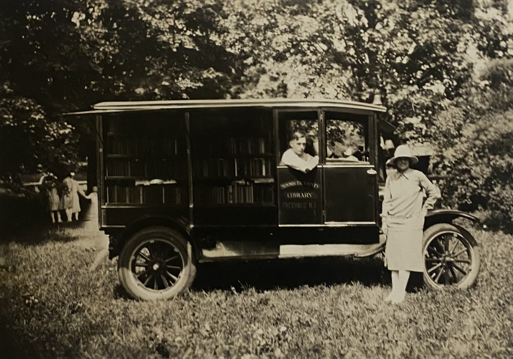
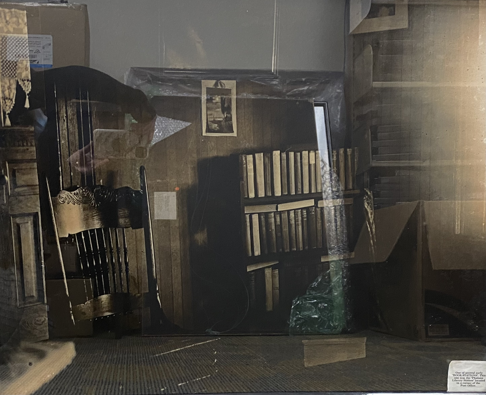
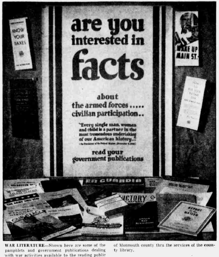
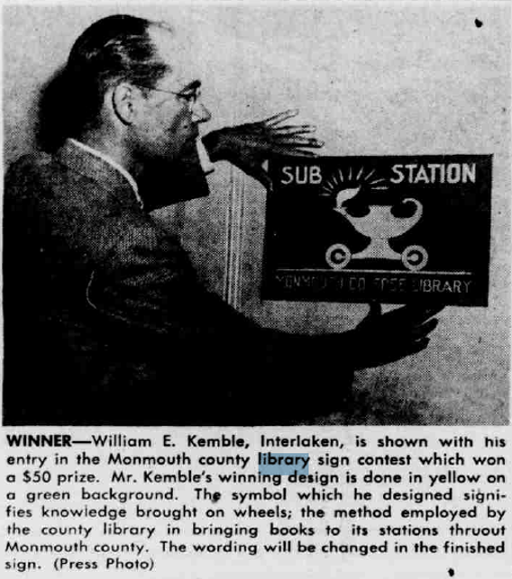

Monmouth County Library is established by the County Board of Freeholders following a successful public vote in favor of creating a county library system. The initiative also has strong support from the County Board of Agriculture, the Grange, and the County Agent.
The Monmouth County Library Commission is then formed and appoints Elinor E. Randall to be the first County Librarian. Randall’s job begins on May 1st.
The library is expected to be fully operational on September 1st.

The County Library Commission is now planning where to create station libraries.
The goal for the station libraries is to make books more easily available to county residents than a city library system could. They are a mix of public and private locations that will house circulating collections for registered borrowers to use.
The first station libraries open in Holmdel, Rumson, and at the Woman’s Club in Ocean Grove.
Every other month, the stations are visited by the Monmouth County Library’s book automobile, which delivers a rotating selection of books for circulation.
The book automobile has been converted from a refurbished truck and weighs more than one ton. It can carry up to 800 items, including books, phonograph records, and pictures.
In addition to the station libraries, residents will also be able to request for materials by mail through the Librarian’s Office, located at the Courthouse in Freehold.

Bertram Borden, who is Chairman of the Housing Committee for the Monmouth County Library, requests that the county review options for making additional space for the library's main headquarters.
After more than 1 year in service, Bertram says that the library has, “completely outgrown its quarters in the basement of the courthouse.”

Monmouth County Library’s collection now includes 23,875 books, which are available to patrons through a network of 40 library stations.
A new partnership with local schools has also begun. Teachers and students can now request books and other materials to be delivered directly to their schools. This allows teachers and students to order reference materials to supplment their lessons, or simply order items to enjoy as recreational reading.
To begin this program, a survey was sent to every school in the county, which lead to responses from 41 schools. The library then visited 26 of the responding schools, out of which 11 were then selected for circulating children’s collections.

Monmouth County Library's book automobile has delivered 35,183 books to the library stations across 515 deliveries.
In a single month, 2,000 books were distributed to the public through the station network.
The headquarters for Monmouth County Library has expanded into a remodeled boiler room located behind the Courthouse in Freehold. There are now 36,557 books in the collection, which is a 53% increase over 14 months. 3,738 of the books have also been delivered to directly fulfill patron book requests.
Books can be borrowed for as long as patrons need to finish them. The time can also be extended if the books are used for studies, or if someone lives far from a library station.
There are 11,170 registered patrons, many of which report that they borrow items for their family members and neighbors as well as for themselves. County librarians also say that metal workers, plumbers, carpenters, and other manual laborers also frequently request for materials to help develop new skills and improve their techniques
Library operations are now supported by a 0.2 mill tax contributed by towns that voted to join the county library system. This funding provides $20,770 for general library functions, and an additional $1,280 is allocated by the state to support the book automobile’s deliveries across 50 schools.
116 stations now exist, and the book automobile visits each one every 2 months. The largest stations are located in Allentown, Atlantic Highlands, Brielle, Farmingdale, Keansburg, Ocean Grove, and Red Bank.
The library has also announced that its primary goal for 1927 is to increase public engagement and demand for the library stations.
Monmouth County Library continues to grow quickly.
The headquarters in Freehold is once again reporting overcrowded conditions as the library's services expand.
The books have made 41,268 circulations in the past year, which was an increase of 10,000 more book circulations compared to the year prior.
Each library station’s collection is now tailored to reflect the interests and needs of its surrounding community. These preferences are communicated to Monmouth County Library by the local individuals who oversee each station.
To keep up with the increased demand, the number of library staff has also grown. However, some locations. such as the Keansburg location, can no longer rely solely on volunteers to maintain their scheduled hours and have begun transitioning to paid staffing.
The book automobile is now distributing approximately 4,000 books across 70 different schools.

The county library report shows that 51,220 books circulated in 1927. This is another increase of 10,000 circulations.
37,243 of the books were borrowed through just one of the library stations alone.

Schools are now using 5,517 reference books provided by the Monmouth County Library. The book automobile also currently runs across 25 routes over a two-month period. Each route includes between two and six library stations.
There are now 135 library stations, each of which houses between 50 and 1,000 books:
The following marketing tactics are being used to acquaint people with the Library’s services:
Librarians also give the following examples of patron needs:
The custodians of the Monmouth County Library system meet in Red Bank Library to form the Monmouth County Library Round Table. The President of Red Bank Public Library, Henry S. White, is voted to be the Board President. All meetings will occur in spring and fall, and the next meeting will be in May at the home of Mrs. B. D. Yard in Allentown.
During this initial meeting, all participants reported increased circulation figures. This rise was attributed to the economic hardships of the Great Depression, after many unemployed individuals turned to the library to make use of their free time.
The largest problem among the libraries now is the lack of new books due dwindling funds. The library’s funding, which usually comes from taxes, is now unavailable due to so many being unemployed and living in financial strain. Members of the Round Table were encouraged to raise public awareness of the library's financial challenges.
The Neptune Library Branch has gained 140 new registrations and doubled its books in circulation from the year before: 8,500 book went out in 1931, and 16,000 books circulated in 1932.
The library is located at 204 Ridge Avenue, and is open on Thursdays 2-5PM.
The Monmouth County Library Commission entertains the organization’s library custodians at the home of County Commissioner B. D. Yard.
50 people from various Monmouth County Library branches and library stations across 27 towns and boroughs attend. There, they meet with the other County Commissioners while enjoying a series of events and lectures.
The Neptune Branch now says that 6,707 books circulated in the past year, which was a significant drop. The branch says that this is because it could not get more new books, which has impacted patron demand.
A fire spreads through a 4-car garage and destroys a Monmouth County Library book truck that was loaded with 1,300 books intended for Brielle Public Library.
Officials say the fire resulted from spontaneous combustion of debris in a different compartment of the garage.
The library states that 3,122 items were loaned to school children in Wanamassa during the last school year. This was an incease of 1,123 items compared with the prior year, showing that the demand for library services within schools is still icnreasing.
The Freehold Borough Council announces that Monmouth County Library can use what used to be the home of a former Borough Clerk as its official Headquarters Branch.
The library is still in a detached building behind the county courthouse and has once again outgrown its physical location. Sheriff George H. Roberts will now take over detached building behind the courthouse for his own department.
The Headquarters Branch of the Monmouth County Library has officially relocated. All books have been transferred to their now location within a house on 69 West Main Street in Freehold. The new Headquarters Branch will open to the public the following day.
The Monmouth County Library Commission’s annual report shows 1,049 new borrowers joined the system. 360,518 titles have also circulated across 67 library stations, 57 schools, and 49 trailer stops.
Monmouth County Library’s new book trailer celebrates its third anniversary.
The trailer’s services are described as being as reliable as the USPS, since it operates in all weather conditions except when snowfall makes travel impossible.
Between 1939 and 1940, the trailer’s circulation numbers doubled purely through word-of-mouth recommendations. It continues to serve remote communities, including Vanderburg, Holmeson, Oak Glen, and El, by traveling across 10 bi-weekly routes.
Inside the trailer, patrons will find a desk, chairs, racks, electric lighting, and a collection includes 800 titles that is regularly freshened up. In the summer, electric fans keep the space cool, while a small coal stove provides heat in the winter.
Items from the book trailer are fine-free since borrowers could easily miss when it visits again. The County Library also states that their mission is to encourage use of its facilities within reason, rather than discourage the borrowing of books through late fines.
The trailer remains the only mobile library of its kind in New Jersey, and is reportedly one of only a few in the entire United States.
Currently the route schedule is as follows:
Week 1
Monday – Reeveytown, Cold Indian Spring, Asbury Gardens, and Summerfield
Tuesday – Allenwood, High View Park, Como and Spring Lake Heights, New Bedford
Wednesday – Port-as-Peek
Thursday – Fleetwood, East Freehold, Vanderburg, Phalanx, and Scobeyville
Friday – Tennent, Manalapan, Gordon’s Corner, Morganville, Wickatunk
Week 2
Monday – Hazlet, North Centerville, West Keansburg, Conterville, and Holmdel
Tuesday – Ely, Holmeson, Cream Rdige, New Sharon, Perrineville, and Sweetman’s Lane
Wednesday – Huise’s Corner, Freewood Acres, Oak Glen, Maxim, and Nist Farms
Thursday – Oakhurst, Loch Arbucur, Wanamassa
Friday – Howell state police barracks, Fitkin hospital nurses’ home, East Farmingdale, and North Farmingdale
The Monmouth County Library Commission has announced that the book trailer will be placed in storage and its delivery service temporarily suspended due to wartime conditions. Instead, a station wagon will be used as a "book truck."
The change is being made because the station wagon can also easily be driven by other people, and it consumes less gasoline - which is now subject to wartime rationing. The change will become effective on March 1st.

Oceanport has announced the opening of a new library station at the local firehouse to replace the services lost with the suspension of the book trailer.
The station will be open every other Tuesday from 1:00 to 3:00 PM.
A total of 43,595 books have circulated from 152 locations across 13 townships and 24 boroughs. In addition, residents have also shared more than 5,000 specific book requests.
With wartime restrictions now gone, Monmouth County Library announces that its demands and services are increasing even more.
The county system now serves 58 branch libraries and 61 schools. Two book mobiles are also in use, one of which can now hold 1,500 titles.
The Monmouth County Library has launched a public contest, inviting residents to design a new sign for display at library stations.
Entries must be submitted on paper or cardboard measuring 12 x 18 inches. Each design should feature a simple, book-related symbol that can be easily recognized from a distance of 30 feet, and may not use more than two colors.
Submissions will be sent to the Asbury Park Press, and the winning design will be announced on June 22 with a $50 prize. In addition to being displayed across the county, the winning sign will be showcased at the national library convention in California.
A winner has been selected in the contest to design signs for the Monmouth County Library’s book stations: William E. Kemble.
Kemble’s winning design features a yellow symbol set against a green background and represents the idea of “knowledge on wheels.”

The Monmouth County Library book mobile is still the only one of its kind in the state, and is now celebrating its eleventh year of service. It is funded by the communities it serves and drives 300 miles each week, and librarians report that during visits, it is not uncommon for a single individual or household to accept the responsibility of borrowing books on behalf of an entire neighborhood. The book mobile is also always staffed with a librarian trained in Reader’s Advisory, as well as a children’s specialist who works with local schools.
The book mobile's collection are updated every 6 weeks, and patrons can have unlimited checkouts. Books are rarely returned late, and a daily fine of 1 cent accrues if items do return overdue.
Communities that have joined the Monmouth County Library system currently contribute a library tax of 3/10ths of a mill on the assessed value of their property. For a property assessed at $1,500, which was the average at the time, that amounted to 45 cents per year.
The Library Commission is now proposing to increase this rate to 4/10ths of a mill. Under the new rate, the same property owner would pay 60 cents annually.
There has been a 16% increase in the area’s population since 1940, and the additional funds would enable evening hours in rural areas, and would allow purchased a new and more reliable “bookmobile” for $6,800. The current bookmobile makes weekly deliveries to 64 municipalities and 60 schools, while the book trailer manages 45 regular stops - including the Marlboro state hospital, the county welfare house in Freehold, and Fitkin hospital.
Neptune opens a new library branch in the basement of the West grove Church on Atkins Avenue. It will be open on Tuesdays from 2 to 5 PM.
The library hopes to breathe a new love for books and rading in children, who are now more commonly seen watching TV than holding a book.
Residents in Allentown and its surrounding communities come and inspect Monmouth County Library's new bookmobile upon arrival its to New Jersey.
The new bookmobile will be used to service rural residents and was designed by a firm in Ohio.
The bookmobile is made from an all-metal body, weights 2 tons, can hold 3,000 books in total by including a cab over the engine that holds an additional 1,000 books, includes two skylights for the daytime and flourescent lights for nighttime, has the newest heating and venting features of its time, and includes desk space for librarians and clerks.
Residents in Allentown and its surrounding communities come and inspect Monmouth County Library's new bookmobile.
The new bookmobile is formally dedicated in front of the Asbury Park Press offices in Press Plaza, alongside the original book automobile from 1923.
The bookmobile will run 5 days each week and manage 59 book stations and 42 trailor stops. At this time, a book station is where permanent book collections exist and are routinely freshened up, while a trailer stop is where a temporary stop occurs and people can approach the vehicle to borrow items from the bookmobile itself.
In September, the older book trailer will be solely devoted to educational services for 60 county schools.
$50 is givento the Monmouth County Library Commission by the Futterman Trust to purchase more sound recordings (AKA: records). The library currently has 600 records, which can be borrowed for two weeks.
The Foundation honors Harry Futterman, who had passed away in 1945. He was a certified accountant in New York and a soldier during World War 1. He recalled that music was what he missed most as a soldier, so her organized a service called Armed Forces Master Records Inc. at the start of World War 2, with the purpose of distributing classical music to the armed forces at posts, on ships, and at stations through 1,500 libraries. He supplied his own office space and secretarial help to ensure the effort was reaches, and the Futterman Trust was created after his passing to continue his legacy and mission.
A series of four articles are published in the Asbury Park Press over the next 4 days, highlighting the dire needs of libraries at the shore in Monmouth County and Ocean County.
After a series of reports and testimony is conducted by committees working with the State Bureau of Public and School library Services over the past 3 years, it is revealed that only two libraries in the Shore area have budgets large enough to support their existence.
The State Library Association recommends that $2.50 is needed by each person per year to support their book demand, however this is more than twice of what is given to Ocean County Library and more than three times with is given to Monmouth County Library. The State Library Association also says that $1.50 per person is the minimum that would be needed for ensuring based operations.
Monmouth County Library currently circulates three books for every two residents, which means that Monmouth County residents now pay 50 cents for each book that is borrowed. The bookmobile alone circulated 57,000 books across 1954, but these statistics do not include how often the books were read, where it is not uncommon for a borrowed book to be read 15 times or more at local schools.
While donations help, it is clear that an increase in library taxes is needed.
Currently, Monmouth County Library receives 70 cents per person, of which less than half is used for staffing the library.
A series of recommendations is given to help ensure that local public money goes further: buolding central buildings to combine collections rather than rely on bookmobile services, pool book orders across the system to avoid duplicate ordering, create a single catalogging department, and coordinate with other school, college, and public libraries to share collections where gaps appear that cannot fulfill demand.
It is explained that not all towns have joined the County Library systems, which causes duplicate purchasing, and increases more demand for bookmobile services, which results in more spending of public money and less impact from library services.
Interestingly, it is also reported that demand for specific titles is increasing more than before once any books are mentioned on TV.
The reports recommends the following goals:
A central library should be accessible to every resident within 30 minutes from their home, with 25,000 well-selected, up-to-date titles. (Currently, only two physical locations in the entire county have over 25,000 titles.)
Collections should also include the newest magazines, films, records, reference resources, and a comfortable reading room.
Every library and bookmobile stop should be supervised by a professional librarian, as well as a children's specialist. (Currently, only two locations have professional librarians on staff.)
An array of programs, activities, and special service for all age groups, which the county library currently does not have.
A working plan for research libraries and state universities to share their collections with the public as well.
Librarian Julia Killian reports that Monmouth County Library now serves 168,000 residents, and the bookmobile services 62 schools that educate 21,000 students. She also explains that TV is now fostering a highering demand for reading rather than discouraging it.
A local resident published a letter in the Asbury Park Press, saying that the County Library is closed on Saturdays, which is the one free day that commuters and other working people have to study, research, or browse for recreational reading. The resident commends Monmouth County Library for being open until 9 PM now on Fridays, but says the library closed at 4:40 PM during the other days of the week is too soon. The resident also stats their concern that the population has been increasing in the county's rural areas, but services were curtailed in one rural area. They write that they hope for services to increase rather than whittle down, and for physical locations to be available at practical and convenient hours for working professionals, which they ensure would make a better community overall.
Staff shortages and taking too long to improve buildings are now impacting the library system. Newer staff work hard to keeps collections and equipment maintained in older locations that are not being renovated, and it is explained that librarians cannot earn more than $2,500 per year until after many years of service.
Budgets are also so small that locations cannot afford more than a few new items - if any at all. This is especially impacting the purchasing of new encyclopedias, business directories, technical books, or magazines, as well as the ability to contain more than a small array of today's more popular fiction and children's books.
Director Killian says that a significant amount of new residents have moved to new housing developments in rural parts of the county, and that 10 new bookmobile stations for permanent collections have been added to accomodate for the increasing demand at communities that do not have a permanent library. 80 rural stations are being maintained by the bookmobile.
Books among public schools are now being rationed due to the increading demand as well. Students in kindergarden through 3rd grade can now borrow shared 25 books to borrow per class, and students in the 4th grade and above can have 3 books for every 2 students.
30,000 students are now borrowing books from Monmouth County Library through their schools.
The American Library Association says that county libraries should be able to give five books for every child in school, which would require $1.50 in library taxes per person. Currently Monmouth County Library received $1 per family.
When a book is overdue, Monmouth County Library now send overdue notices through the mail that include the replacement fees followed by a telephone call.
If the item still does not return, then a librarian visits the home, which results in 75% of items being returned.
This is done to avoid replacement fees, which can double in price for books that are now out-of-print, and to preserve the budget.
Librarian Rowland Mauch begins a single-person campaign to generate interest in establishing a municipal library at Neptune Township.
The current library's permanent collection is made from 300 donated books at a corner of the welfare office, while 300 other books are switched out by the bookmobile. The collection is open to the public only on Tuesdays from noon to 4 PM, and she is hosted a "clean the attic" campaign to gain more books on February 7th. Mauch believes that the growing township now needs formal building, though she has ordered additional shelving to hold another 1,000 books. She says the library's biggest need right now is for Reference Books, which are too costly to be purchased with her current budget.
Mauch also wants to establish memorials within the books that can be created through donations to the library to help fundraise for a location, though she states publicly that residents must want a library and become involved in working to create one if they want one.
The township says they want to see how the library grows in its current environment before seeking options to build a permanent location, and that their current budget can be stretched to help buy the most needed items currently.
Asbury Park Library, which is not part of the Monmouth County Library system, is reporting that they are now buying less books than during the Great Depression due to limited funding.
While Asbury Park Library is not part of the Monmouth County Library system, Director Julia Killian says the cost of books has risen by 75% over the past 25 years, which is impacting the library system - the largest book purchaser in the county.
The Shrewsbury Borough Council announces that an emergency appropriation was made to establish a physical library. The appropriation may not exceed $3,000.
The borough has been serviced by the bookmobile and has needed a physical branch location for a while now. The library will house 3,000 books to circulatie and $500 of new books will be purchased. The library will also be open 3 days each week.
Monmouth County Library now has 125,000 books and delivers items to 65 elementary schools and 5 high schools.
While residents and property owners automatically qualify for a library card, other adults may join by paying a deposit that is returned when the patron withdraws. Many summertime residents take advantage of this system, and those who are 21 years old or younger must get parental permission to join temporarily.
This is done to avoid replacement fees, which can double in price for books that are now out-of-print, and to preserve the budget.
Neptune resident Catherine Scott writes to the Asbury Park Press to express her appreciation for Librarian Rowland Mauch.
Thanks to the efforts of Mauch, Neptune is celebrating its third year having a physical library location, and there are now 500 permanent books to borrow. Additionally, the resident appreciates that Mauch regularly drives to Freehold to rotate the remaining books which belong to Monmouth County Library's rotating collection, and shared that 200 regular patrons have made 2,678 circulations thanks to Mauch's efforts.
During the summertime, Monmouth County Library's Branch at 80 Brad Street is open from 9 AM to 5 PM, an summertime visitors can join the library temporarily if they pay a $1 subscription and $5 deposit. As long as all items are returned and no overdue fines remain, the $5 deposit is given back once visitors leave to return home.
The Holmdel Township Committee agrees to allow temporary use of the township hall for a library station, which will be run by voluntary help.
Currently, the township is serviced by monthly visits by the bookmobile, and the Comittee agrees to consider creating a permanent library location within the building during the plans for an upcoming renovation to the township hall.
A school is now temporarily using the township hall, but a new school location will soon be finished, freeing up space in the building.
The bookmobile is now serving 70 schools, and Director Killian is reporting that increased population at the Shore is increasing the demand for library locations, and is also saying that the Headquarter's location is now becoming too small for current work functions.
When a book is overdue, Monmouth County Library now send overdue notices through the mail that include the replacement fees followed by a telephone call.
If the item still does not return, then a librarian visits the home, which results in 75% of items being returned.
This is done to avoid replacement fees, which can double in price for books that are now out-of-print, and to preserve the budget.